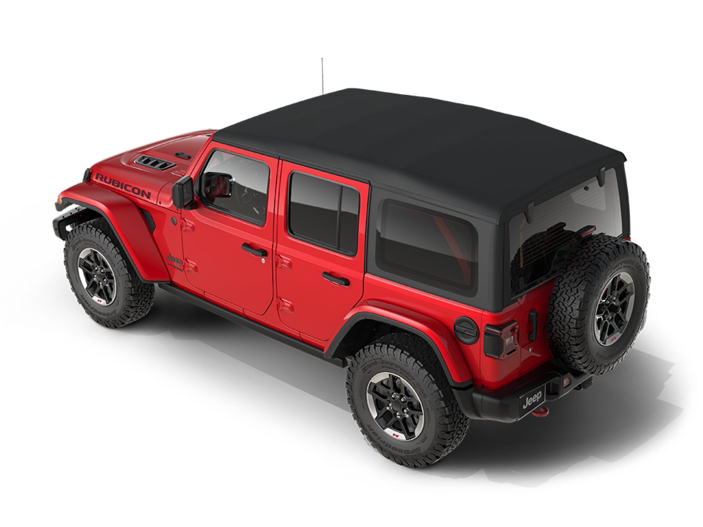

NOTHING ELSE COMPARES TO THE WRANGLER EXTERIOR. WHEREVER THE WORLD TAKES YOU GET THERE IN ICONIC STYLE.
An easy-to-lower standard Sunrider® soft top, a removable available Freedom Top® hardtop, or an available Sky One-Touch® Power Top can be combined with a fold-down windshield and removable doors . The Wrangler offers the Most Ways to Experience Open-Air Freedom
The available Premium LED Lighting Group includes signature Reflector Headlamps, Fog Lamps and Daytime Running Lamps for impressive visibility and style. Plus, vibrant taillamps help alert drivers approaching from the rear.
Whether you want to ride in exceptional style or are ready to hit the trail at a moment’s notice, there's a Wrangler to meet your needs.
From city streets to dirt roads, Sahara is always in its element with body-color fender flares, silver accents and 18-inch tech gray wheels that are styled to stand out.
Rubicon strikes an unmistakable look with a high stance accentuated by bold fender flares designed to accommodate up to 35-inch tires. Two vents in the hood help cool the engine, while rock rails, red tow hooks and a red Trail Rated® badge finish the look.